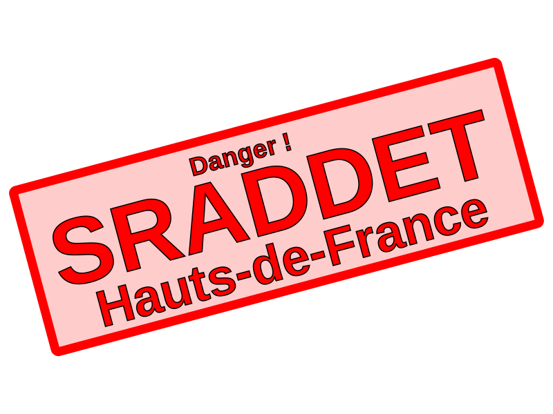

Le SRADDET, c'est quoi ?
- schéma régional d'aménagement, de développement durable et d'égalité des territoires
- cinq axes: (1) climat air énergie, (2) infrastructure de transports et intermodalité, (3) biodiversité, (4) déchets, (5) numérique
- planification des 20 prochaines années
- enquête publique jusqu'à 15 Octobre – nécessité d'y participer pour s'y opposer
Danger ? Pourquoi ?
- aucune prise en compte sérieuse du dérèglement climatique et de la crise de la biodiversité, aucune prévention des risques induits (submersion marine sur littoral industriel et nucléaire, sécheresse, inondations...)
- dérégulation de l'aménagement et du développement économique aggravant cette crise : urbanisation non maîtrisée, hub logistique international, agriculture chimique, sur consommation énergétique
- mépris du principe de non régression environnementale des accords nationaux et internationaux en faveur du climat
Comment participer à l'enquête publique sur le SRADDET ?
- Atelier SRADDET à la MRES le 9 Octobre : comment analyser et donner son avis à l'enquête publique - RSVP sur https://facebook.com/1234567890
- Signez la pétition pour rejeter les SRADDET Hauts de France: https://change.org/1234567890
- Partagez cette page !
Liens
- SRADDET sur Wikipedia
- SRADDET Hauts-de-France - http://sraddet.participons.net/
- Vos avis - https://www.registredemat.fr/sraddethautsdefrance-enquetepublique/presentation
Porteurs
- Wasquehal en Transition
- Collectif Tous Acteurs de Notre Ville - Saint-André
- Emmerin Nature
- Environnement Développement Alternatif
- Parc
- Entrelianes
- Virage Energie Nord-Pas-de-Calais